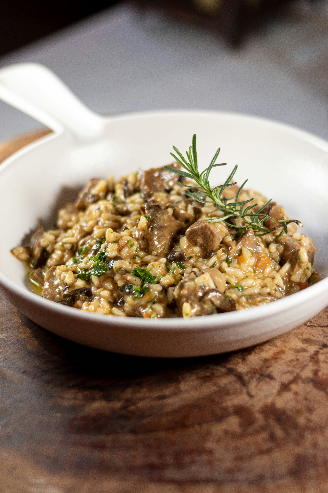

Risotto de setas

El risotto de setas es uno de los platos más representativos de la cocina italiana. Se caracteriza por su textura cremosa y su intenso sabor, resultado de la cocción lenta del arroz con caldo y la incorporación progresiva de los ingredientes.
Datos de la receta
- Nombre
- Risotto de setas
- Origen
- Italia (norte, región de Lombardía)
- Tipo de plato
- Arroz cremoso
- Dificultad
- Media
- Tiempo aproximado
- 35-40 minutos
- Ingredientes principales
-
- Arroz arborio o carnaroli
- Setas variadas
- Caldo de verduras
- Cebolla
- Vino blanco
- Queso parmesano
- Mantequilla
- Aceite de oliva
- Sal y pimienta
Descripción
El risotto es una técnica culinaria típica del norte de Italia que consiste en cocinar el arroz lentamente mientras se añade caldo poco a poco. Este proceso permite liberar el almidón del arroz, generando una textura cremosa sin necesidad de añadir nata.
En la versión de setas, el sabor se intensifica gracias al uso de ingredientes como champiñones, boletus u otras variedades silvestres. El resultado es un plato aromático, equilibrado y muy reconfortante.
La clave del risotto está en la paciencia y en remover constantemente el arroz durante la cocción. El toque final de mantequilla y queso parmesano aporta brillo y suavidad al plato.